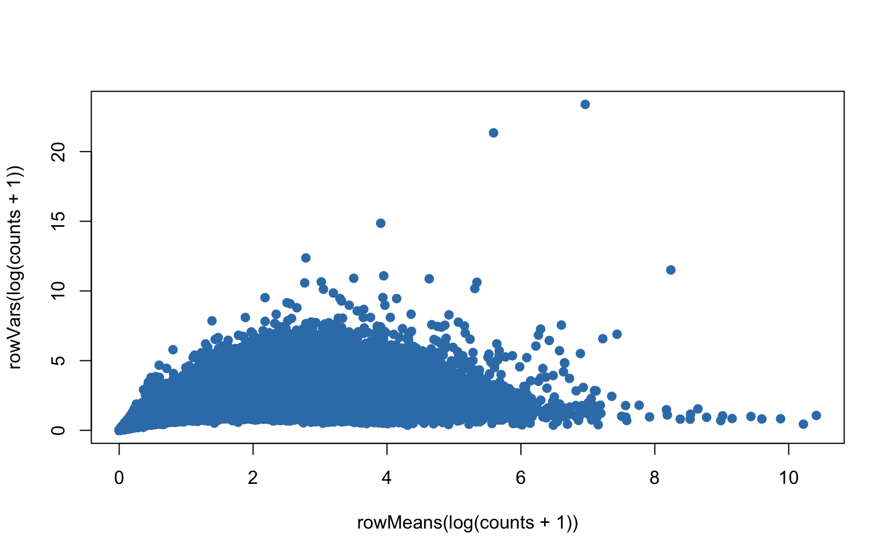
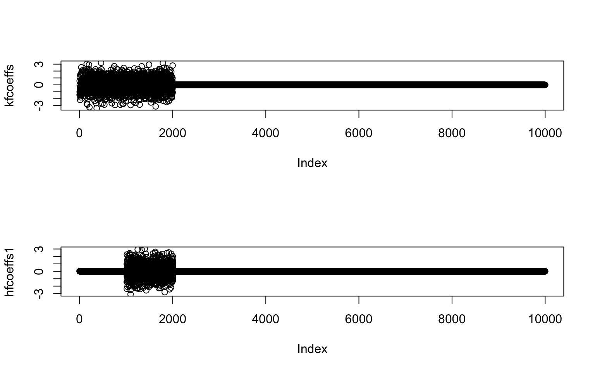
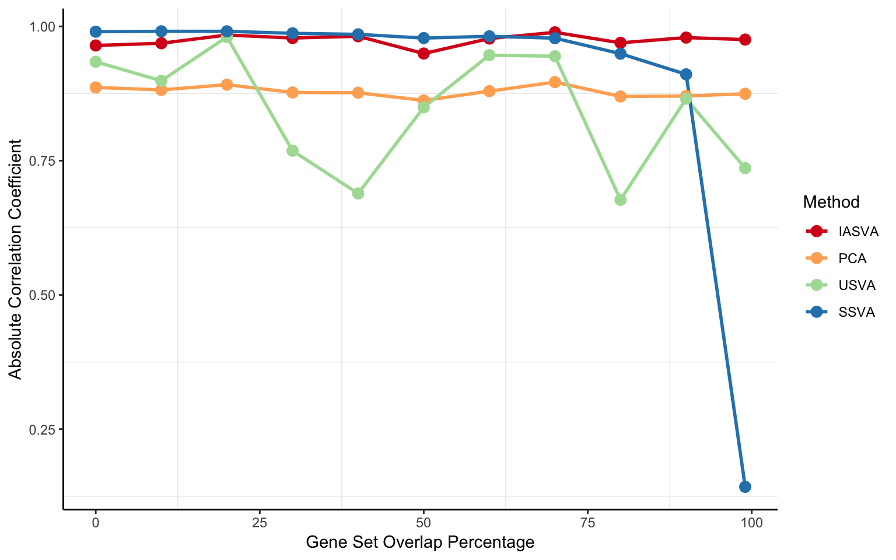

Last updated: 2018-08-01
workflowr checks: (Click a bullet for more information) ✔ R Markdown file: up-to-date
Great! Since the R Markdown file has been committed to the Git repository, you know the exact version of the code that produced these results.
✔ Environment: empty
Great job! The global environment was empty. Objects defined in the global environment can affect the analysis in your R Markdown file in unknown ways. For reproduciblity it’s best to always run the code in an empty environment.
✔ Seed:
set.seed(20180731)
The command set.seed(20180731) was run prior to running the code in the R Markdown file. Setting a seed ensures that any results that rely on randomness, e.g. subsampling or permutations, are reproducible.
✔ Session information: recorded
Great job! Recording the operating system, R version, and package versions is critical for reproducibility.
✔ Repository version: 5a96a44
wflow_publish or wflow_git_commit). workflowr only checks the R Markdown file, but you know if there are other scripts or data files that it depends on. Below is the status of the Git repository when the results were generated:
Ignored files:
Ignored: .DS_Store
Ignored: .Rhistory
Ignored: .Rproj.user/
Ignored: data/.DS_Store
Ignored: inst/.DS_Store
Ignored: inst/doc/.DS_Store
Ignored: vignettes/.DS_Store
Untracked files:
Untracked: analysis/Brain_scRNASeq_neuron_vs_oligodendrocyte_single_run.Rmd
Untracked: analysis/detecting_hidden_heterogeneity.Rmd
Untracked: analysis/hidden_heterogeneity_glioblastoma.Rmd
Untracked: analysis/reviewer2_sim.Rmd
Untracked: analysis/scRNASeq_simulation.Rmd
Untracked: analysis/tSNE_post_IA-SVA_3celltypes.Rmd
Untracked: analysis/tSNE_post_IA-SVA_Xin_Islets.Rmd
Untracked: docs/figure/
Untracked: output/GeneOverlap.Fig1.pdf
Untracked: output/GeneOverlap.Fig2.pdf
Untracked: output/absCor_gene_overlap_pct.pdf
Untracked: output/gene_overlap.pdf
Unstaged changes:
Modified: analysis/_site.yml
Deleted: analysis/about.Rmd
Modified: analysis/index.Rmd
Modified: analysis/license.Rmd
#devtools
library(devtools)
#iasva
devtools::install_github("UcarLab/IA-SVA")
#iasvaExamples
devtools::install_github("dleelab/iasvaExamples")rm(list=ls())
library(irlba) # partial SVD, the augmented implicitly restarted Lanczos bidiagonalization algorithm
library(iasva)
library(iasvaExamples)
library(sva)
library(polyester)
library(corrplot)
library(DescTools) #pcc i.e., Pearson's contingency coefficient
library(RColorBrewer)
library(reshape2)
library(ggplot2)
library(SummarizedExperiment)
color.vec <- brewer.pal(9, "Set1")
iasva.tmp <- function(Y, X, intercept=TRUE, num.sv=NULL, permute=TRUE, num.p=100, sig.cutoff= 0.05, threads=1, num.sv.permtest=NULL, tol=1e-10, verbose=FALSE){
cat("IA-SVA running...")
sv <- NULL
pc.stat.obs <- NULL
pval <- NULL
wgt.mat <- NULL
rsq <- NULL
isv <- 0
while(TRUE){
if(!is.null(num.sv)){
if(isv==num.sv){
break
}
}
iasva.res <- iasva.unit.tmp(Y, X, intercept, permute, num.p, threads, num.sv.permtest, tol, verbose)
if(iasva.res$pval < sig.cutoff){
sv <- cbind(sv, iasva.res$sv)
pc.stat.obs <- cbind(pc.stat.obs, iasva.res$pc.stat.obs)
pval <- c(pval, iasva.res$pval)
wgt.mat <- cbind(wgt.mat, iasva.res$wgt)
X <- cbind(X,iasva.res$sv)
} else { break }
isv <- isv+1
cat(paste0("\nSV",isv, " Detected!"))
}
if (isv > 0) {
colnames(sv) <- paste0("SV", 1:ncol(sv))
cat(paste0("\n# of significant surrogate variables: ",length(pval)))
return(list(sv=sv, pc.stat.obs=pc.stat.obs, pval=pval, n.sv=length(pval), wgt.mat=wgt.mat))
} else {
cat ("\nNo significant surrogate variables")
}
}
iasva.unit.tmp <- function(Y, X, intercept=TRUE, permute=TRUE, num.p=100, threads=1, num.sv.permtest=NULL, tol=1e-10, verbose=FALSE){
if(min(Y)<0){ Y <- Y + abs(min(Y)) }
lY <- log(Y+1)
if(intercept){
fit <- .lm.fit(cbind(1,X), lY)
} else {
fit <- .lm.fit(X, lY)
}
resid <- resid(fit)
tresid = t(resid)
if(verbose) {cat("\n Perform SVD on residuals")}
svd_pca <- irlba::irlba(tresid-rowMeans(tresid), 1, tol=tol)
if(verbose) {cat("\n Regress residuals on PC1")}
fit <- .lm.fit(cbind(1,svd_pca$v[,1]), resid)
if(verbose) {cat("\n Get Rsq")}
rsq.vec <- calc.rsq(resid, fit)
if(verbose) {cat("\n Rsq 0-1 Normalization")}
rsq.vec[is.na(rsq.vec)] <- min(rsq.vec, na.rm=TRUE)
wgt <- (rsq.vec-min(rsq.vec))/(max(rsq.vec)-min(rsq.vec)) #0-1 normalization
if(verbose) {cat("\n Obtain weighted log-transformed read counts")}
tlY = t(lY)*wgt # weigh each row (gene) with respect to its Rsq value.
if(verbose) {cat("\n Perform SVD on weighted log-transformed read counts")}
sv <- irlba::irlba(tlY-rowMeans(tlY), 1, tol=tol)$v[,1]
if(permute==TRUE){
if(verbose) {cat("\n Assess the significance of the contribution of SV")}
if(is.null(num.sv.permtest)){
svd.res.obs <- svd(tresid - rowMeans(tresid))
} else {
svd.res.obs <- irlba::irlba(tresid-rowMeans(tresid), num.sv.permtest, tol=tol)
}
pc.stat.obs <- svd.res.obs$d[1]^2/sum(svd.res.obs$d^2)
if(verbose) {cat("\n PC test statistic value:", pc.stat.obs)}
# Generate an empirical null distribution of the PC test statistic.
pc.stat.null.vec <- rep(0, num.p)
permute.svd <- permute.svd.factory(lY, X, num.sv.permtest, tol, verbose)
if (threads > 1) {
threads <- min(threads, parallel::detectCores()-1)
cl <- parallel::makeCluster(threads)
pc.stat.null.vec <- tryCatch(parallel::parSapply(cl, 1:num.p, permute.svd), error=function(err){parallel::stopCluster(cl); stop(err)})
parallel::stopCluster(cl)
} else {
pc.stat.null.vec <- sapply(1:num.p, permute.svd)
}
if(verbose) {cat("\n Empirical null distribution of the PC statistic:", sort(pc.stat.null.vec))}
pval <- sum(pc.stat.obs <= pc.stat.null.vec)/(num.p+1)
if(verbose) {cat("\n Permutation p-value:", pval)}
} else {
pc.stat.obs <- -1
pval <- -1
}
return(list(sv=sv, pc.stat.obs=pc.stat.obs, pval=pval, wgt=wgt))
}
calc.rsq <- function(resid, fit) {
RSS <- colSums(resid(fit)^2)
TSS <- colSums(t(t(resid) - colSums(resid)/ncol(resid)) ^ 2) # vectorized
# TSS <- colSums(sweep(resid, 2, mean, "-") ^ 2) # alt-2
return(1-(RSS/(nrow(resid)-2))/(TSS/(nrow(resid)-1)))
}
permute.svd.factory <- function(lY, X, num.sv.permtest, tol, verbose) {
permute.svd <- function(i) {
permuted.lY <- apply(t(lY), 1, sample, replace=FALSE)
tresid.null <- t(resid(.lm.fit(cbind(1,X), permuted.lY)))
if(is.null(num.sv.permtest)) {
svd.res.null <- svd(tresid.null)
} else {
svd.res.null <- irlba::irlba(tresid.null, num.sv.permtest, tol=tol)
}
return(svd.res.null$d[1]^2/sum(svd.res.null$d^2))
}
return(permute.svd)
}data("Lawlor_Islet_scRNAseq_Read_Counts")
data("Lawlor_Islet_scRNAseq_Annotations")
ls()[1] "calc.rsq" "color.vec"
[3] "iasva.tmp" "iasva.unit.tmp"
[5] "Lawlor_Islet_scRNAseq_Annotations" "Lawlor_Islet_scRNAseq_Read_Counts"
[7] "permute.svd.factory" counts <- Lawlor_Islet_scRNAseq_Read_Counts
anns <- Lawlor_Islet_scRNAseq_Annotations
dim(anns)[1] 638 26dim(counts)[1] 26542 638summary(anns) run cell.type COL1A1 INS
Length:638 Length:638 Min. :1.00 Min. :1.000
Class :character Class :character 1st Qu.:1.00 1st Qu.:1.000
Mode :character Mode :character Median :1.00 Median :1.000
Mean :1.03 Mean :1.414
3rd Qu.:1.00 3rd Qu.:2.000
Max. :2.00 Max. :2.000
PRSS1 SST GCG KRT19
Min. :1.000 Min. :1.000 Min. :1.000 Min. :1.000
1st Qu.:1.000 1st Qu.:1.000 1st Qu.:1.000 1st Qu.:1.000
Median :1.000 Median :1.000 Median :1.000 Median :1.000
Mean :1.038 Mean :1.039 Mean :1.375 Mean :1.044
3rd Qu.:1.000 3rd Qu.:1.000 3rd Qu.:2.000 3rd Qu.:1.000
Max. :2.000 Max. :2.000 Max. :2.000 Max. :2.000
PPY num.genes Cell_ID UNOS_ID
Min. :1.000 Min. :3529 10th_C1_S59 : 1 ACCG268 :136
1st Qu.:1.000 1st Qu.:5270 10th_C10_S104: 1 ACJV399 :108
Median :1.000 Median :6009 10th_C11_S96 : 1 ACEL337 :103
Mean :1.028 Mean :5981 10th_C13_S61 : 1 ACIW009 : 93
3rd Qu.:1.000 3rd Qu.:6676 10th_C14_S53 : 1 ACCR015A: 57
Max. :2.000 Max. :8451 10th_C16_S105: 1 ACIB065 : 57
(Other) :632 (Other) : 84
Age Biomaterial_Provider Gender Phenotype
Min. :22.00 IIDP : 45 Female:303 Non-Diabetic :380
1st Qu.:29.00 Prodo Labs:593 Male :335 Type 2 Diabetic:258
Median :42.00
Mean :39.63
3rd Qu.:53.00
Max. :56.00
Race BMI Cell_Type Patient_ID
African American:175 Min. :22.00 INS :264 P1 :136
Hispanic :165 1st Qu.:26.60 GCG :239 P8 :108
White :298 Median :32.95 KRT19 : 28 P3 :103
Mean :32.85 SST : 25 P7 : 93
3rd Qu.:35.80 PRSS1 : 24 P5 : 57
Max. :55.00 none : 21 P6 : 57
(Other): 37 (Other): 84
Sequencing_Run Batch Coverage Percent_Aligned
12t : 57 B1:193 Min. :1206135 Min. :0.8416
4th : 57 B2:148 1st Qu.:2431604 1st Qu.:0.8769
9th : 57 B3:297 Median :3042800 Median :0.8898
10t : 56 Mean :3160508 Mean :0.8933
7th : 55 3rd Qu.:3871697 3rd Qu.:0.9067
3rd : 53 Max. :5931638 Max. :0.9604
(Other):303
Mitochondrial_Fraction Num_Expressed_Genes
Min. :0.003873 Min. :3529
1st Qu.:0.050238 1st Qu.:5270
Median :0.091907 Median :6009
Mean :0.108467 Mean :5981
3rd Qu.:0.142791 3rd Qu.:6676
Max. :0.722345 Max. :8451
ContCoef(table(anns$Gender, anns$Cell_Type))[1] 0.225969ContCoef(table(anns$Phenotype, anns$Cell_Type))[1] 0.1145096ContCoef(table(anns$Race, anns$Cell_Type))[1] 0.3084146ContCoef(table(anns$Patient_ID, anns$Cell_Type))[1] 0.5232058ContCoef(table(anns$Batch, anns$Cell_Type))[1] 0.3295619plot(rowMeans(log(counts+1)),rowVars(log(counts+1)),pch=19,col=color.vec[2])
## Estimate the zero inflated negative binomial parameters
params = get_params(counts)Here we compare unsupervised SVA, supervised SVA and IA-SVA
set.seed(1234) #5000
sample.size <- 50
num.genes <- 10000
prop.kfactor.genes <- 0.2 #known factor
prop.hfactor1.genes <- 0.1 #hidden factor1
num.kfactor.genes <- num.genes*prop.kfactor.genes
num.hfactor1.genes <- num.genes*prop.hfactor1.genes
factor.prop <- 0.5
kfactor = c(rep(-1,each=sample.size*factor.prop),rep(1,each=sample.size-(sample.size*factor.prop)))
coinflip = rbinom(sample.size,size=1,prob=0.8)
hfactor1 = kfactor*coinflip + -kfactor*(1-coinflip)
cor(cbind(kfactor,hfactor1)) kfactor hfactor1
kfactor 1.0000000 0.6821865
hfactor1 0.6821865 1.0000000hfactor.mat <- cbind(hfactor1)
kfcoeffs = c(rnorm(num.kfactor.genes),rep(0,num.genes-num.kfactor.genes))
nullindex= (num.kfactor.genes+1):num.genes
overlap.prop <- 0.99
#hfcoeffs1 = c(rep(0,num.kfactor.genes*(1-overlap.prop)),rnorm(num.hfactor1.genes,sd=1),rep(0,num.genes-num.kfactor.genes*(1-overlap.prop)-num.hfactor1.genes))
hfcoeffs1 = c(rep(0,num.kfactor.genes-num.hfactor1.genes*overlap.prop),rnorm(num.hfactor1.genes,sd=1),rep(0,num.genes-(num.kfactor.genes-num.hfactor1.genes*overlap.prop)-num.hfactor1.genes))
par(mfrow=c(2,1))
plot(kfcoeffs)
plot(hfcoeffs1)
par(mfrow=c(1,1))
coeffs = cbind(hfcoeffs1,kfcoeffs)
controls = (hfcoeffs1!=0)&(kfcoeffs==0)
mod = model.matrix(~-1 + hfactor1 + kfactor)
dat0 = create_read_numbers(params$mu,params$fit,
params$p0,beta=coeffs,mod=mod)
sum(dat0==0)/length(dat0)[1] 0.680858filter = apply(dat0, 1, function(x) length(x[x>5])>=2)
dat0 = dat0[filter,]
sum(dat0==0)/length(dat0)[1] 0.5555512controls <- controls[filter]
dim(dat0)[1] 7067 50dim(mod)[1] 50 2iasva.cor.vec <- as.vector(abs(cor(hfactor1, do.call(cbind, hfactors_iasva_list))))
pca.cor.vec <- as.vector(abs(cor(hfactor1, do.call(cbind, hfactors_pca_list))))
usva.cor.vec <- as.vector(abs(cor(hfactor1, do.call(cbind, hfactors_usva_list))))
ssva.cor.vec <- as.vector(abs(cor(hfactor1, do.call(cbind, hfactors_ssva_list))))
cor.df <- data.frame(overlap.pct = 100*overlap.prop.vec,
IASVA = iasva.cor.vec,
PCA = pca.cor.vec,
USVA = usva.cor.vec,
SSVA = ssva.cor.vec)
melt.cor.df <- melt(cor.df, id.var=c("overlap.pct"))
p <- ggplot(melt.cor.df, aes(x=overlap.pct, y=value, group=variable))
p <- p + geom_line(aes(col=variable), size=1)
p <- p + geom_point(aes(col=variable), size=3)
p <- p + xlab("Gene Set Overlap Percentage")
p <- p + ylab("Absolute Correlation Coefficient")
#p <- p + scale_color_manual(values=color.vec)
p <- p + scale_color_brewer(palette = "Spectral", name="Method")
p <- p + theme_bw()
p <- p + theme(panel.border = element_blank(), panel.grid.major = element_blank(),
#panel.grid.minor = element_blank(),
axis.line = element_line(colour = "black"))
p
ggsave("output/absCor_gene_overlap_pct.pdf", width=8, height=5)sessionInfo()R version 3.5.0 (2018-04-23)
Platform: x86_64-apple-darwin15.6.0 (64-bit)
Running under: macOS Sierra 10.12.6
Matrix products: default
BLAS: /Library/Frameworks/R.framework/Versions/3.5/Resources/lib/libRblas.0.dylib
LAPACK: /Library/Frameworks/R.framework/Versions/3.5/Resources/lib/libRlapack.dylib
locale:
[1] en_US.UTF-8/en_US.UTF-8/en_US.UTF-8/C/en_US.UTF-8/en_US.UTF-8
attached base packages:
[1] parallel stats4 stats graphics grDevices utils datasets
[8] methods base
other attached packages:
[1] SummarizedExperiment_1.10.1 DelayedArray_0.6.1
[3] matrixStats_0.53.1 Biobase_2.40.0
[5] GenomicRanges_1.32.3 GenomeInfoDb_1.16.0
[7] IRanges_2.14.10 S4Vectors_0.18.3
[9] BiocGenerics_0.26.0 ggplot2_2.2.1.9000
[11] reshape2_1.4.3 RColorBrewer_1.1-2
[13] DescTools_0.99.24 corrplot_0.84
[15] polyester_1.16.0 sva_3.28.0
[17] BiocParallel_1.14.2 genefilter_1.62.0
[19] mgcv_1.8-23 nlme_3.1-137
[21] iasvaExamples_1.0.0 iasva_0.99.3
[23] irlba_2.3.2 Matrix_1.2-14
loaded via a namespace (and not attached):
[1] bitops_1.0-6 bit64_0.9-7 rprojroot_1.3-2
[4] tools_3.5.0 backports_1.1.2 R6_2.2.2
[7] DBI_1.0.0 lazyeval_0.2.1 colorspace_1.3-2
[10] withr_2.1.2 tidyselect_0.2.4 bit_1.1-14
[13] compiler_3.5.0 git2r_0.21.0 expm_0.999-2
[16] labeling_0.3 scales_0.5.0 mvtnorm_1.0-8
[19] stringr_1.3.1 digest_0.6.15 foreign_0.8-70
[22] rmarkdown_1.9 R.utils_2.6.0 XVector_0.20.0
[25] pkgconfig_2.0.1 htmltools_0.3.6 manipulate_1.0.1
[28] limma_3.36.2 rlang_0.2.1 RSQLite_2.1.1
[31] bindr_0.1.1 dplyr_0.7.5 R.oo_1.22.0
[34] RCurl_1.95-4.10 magrittr_1.5 GenomeInfoDbData_1.1.0
[37] Rcpp_0.12.17 munsell_0.4.3 R.methodsS3_1.7.1
[40] stringi_1.2.2 whisker_0.3-2 logspline_2.1.11
[43] yaml_2.1.19 MASS_7.3-50 zlibbioc_1.26.0
[46] plyr_1.8.4 grid_3.5.0 blob_1.1.1
[49] lattice_0.20-35 Biostrings_2.48.0 splines_3.5.0
[52] annotate_1.58.0 knitr_1.20 pillar_1.2.3
[55] boot_1.3-20 XML_3.98-1.11 glue_1.2.0
[58] evaluate_0.10.1 gtable_0.2.0 purrr_0.2.5
[61] assertthat_0.2.0 xtable_1.8-2 survival_2.42-3
[64] tibble_1.4.2 AnnotationDbi_1.42.1 memoise_1.1.0
[67] workflowr_1.0.1 bindrcpp_0.2.2 cluster_2.0.7-1 This reproducible R Markdown analysis was created with workflowr 1.0.1